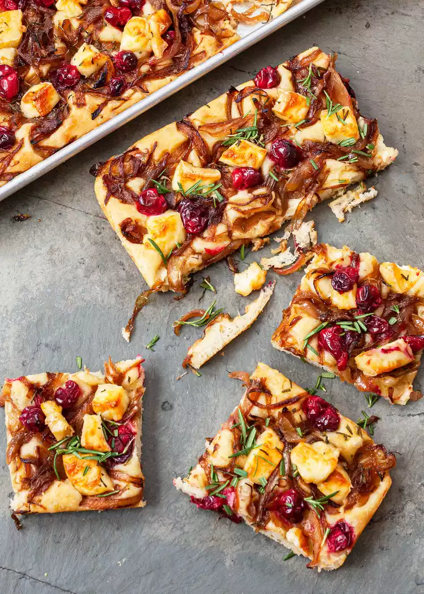

Focaccia con cipolla caramellata,brie e mirtillo
Questa gustosa focaccia,diventerà la vostra favorita durante le vacanze.

Ingredienti
per la focaccia
- 500 g di farina
- 1 cucchiaio di lievito istantaneo
- 1 cucchiaino di sale
- 350g di acqua tiepida
- 1 cucchiaio di olio d'oliva
per la farcitura
- 1 cipolla rossa a fettine
- 1 cucchiaio di aceto balsamico
- 1-2 cucchioi di olio d'oliva
- 10 fette di brie tagliate a cubetti
- 1 coppa di mirtilli freschi
Procedimento
- Preparare la farcitura in una ciotola media,mixate tutti gli ingredienti,finche la farina non è completamente assorbita.lasciate lievitare l'impasto.stendete in una teglia,farcite e cuocete in forno pre riscaldato a 200gradi per 30 min.